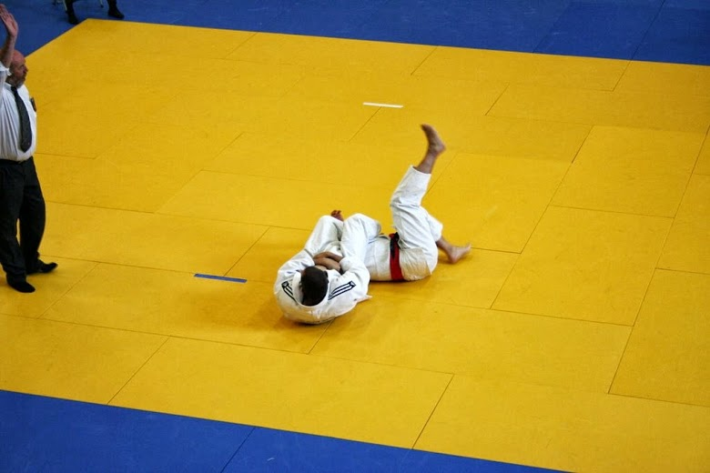

Little Champions
Ages 5–7. Falling safely, listening, and learning to move with control - the building blocks of every judo throw, taught through games.
Sacramento, California · Est. 1989
A judo club for kids, teens, and adults who want to learn the gentle way - real technique, real discipline, real community, taught on the mat by coaches who still compete.

Team Sacramento Judo · on the mat
Welcome
Whether you're seven years old and signing up for your first sport, or forty-seven and looking for something that will challenge your body and your mind at the same time, judo meets you where you are. We teach proper falling, throwing, and groundwork from day one, in a room that takes safety as seriously as it takes technique.
Programs
Ages 5–7. Falling safely, listening, and learning to move with control - the building blocks of every judo throw, taught through games.
Ages 8–15. Full throwing and groundwork curriculum, belt promotions, and the option to start competing in local tournaments.
Ages 16+. All experience levels train together, from total beginners to returning competitors prepping for the next tournament.

Competing abroad - judo travels with you
Why judo
Judo means "the gentle way" - using leverage and timing instead of brute force. Members leave practice with more than technique: balance under pressure, respect for training partners, and the kind of discipline that shows up off the mat too.
About our club